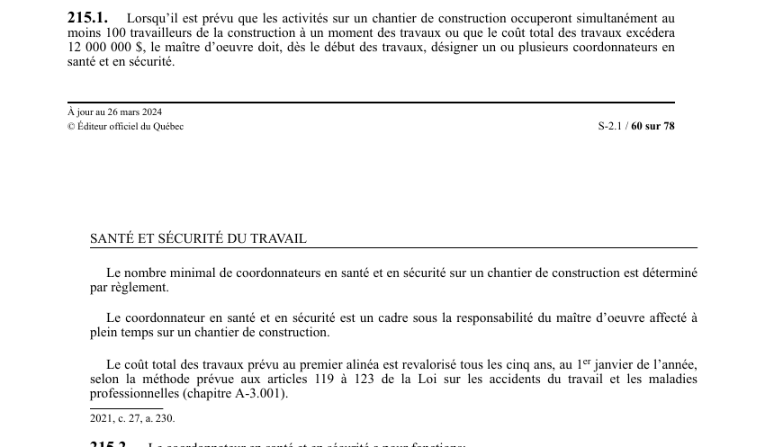

art-215.1-LSST : désignation coordonnateur santé sécurité
Un article du wiki ⚖️ Recueil législatif
En bref
Lorsqu'un chantier occupera simultanément au moins 100 travailleurs de la construction ou que le coût total des travaux excédera le seuil prévu. Cette obligation vise le maître d'œuvre.
- Le maître d'oeuvre doit dès le début des travaux désigner.
- Au moins 100 travailleurs simultanément ou coût total excédant le seuil prévu.
- Nombre minimal par règlement.
- Coût revalorisé tous les cinq ans.
- Coordonnateur cadre affecté à plein temps.
🌐 LegisQuébec · 📄 PDF officiel (page 60)
Texte officiel : capture du PDF
{kind=link}

Toucher l'image pour l'agrandir🔗 Ouvrir a cette page : LSST.pdf : page 60 · texte a jour au 26 mars 2024
Voir aussi
- art. 214 : représentant réputé au travail · le représentant en santé et en sécurité est réputé être au travail lorsqu'il exerce ses fonctions.
- art. 215 : application Loi relations travail construction · obligation : l'article 26 de la Loi sur les relations du travail, la formation professionnelle et la gestion de la main-d'oeuvre dans l'industrie de la construction s'applique, compte tenu des adaptations nécessaires, au représentant en santé et en sécurité.
- art. 215.2 : fonctions coordonnateur santé sécurité · le coordonnateur en santé et en sécurité participe à l'élaboration et à la mise à jour du programme de prévention, surveille la coordination des activités des employeurs, identifie les situations dangereuses, inspecte les lieux de travail.
- art. 215.3 : formation du coordonnateur SST · obligation : le coordonnateur en santé et en sécurité doit participer aux programmes de formation dont le contenu et la durée sont déterminés par règlement ; il peut s'absenter sans perte de salaire et les frais sont assumés par la Commission.
- ↑ Loi : LSST
Pages qui pointent ici (5)
- art-214-LSST : représentant réputé au travail Recueil législatif
- art-215-LMRSST : modifie l'art. 194 LSST Recueil législatif
- art-215-LSST : application Loi relations travail construction Recueil législatif
- art-215.2-LSST : fonctions coordonnateur santé sécurité Recueil législatif
- art-215.3-LSST : formation du coordonnateur SST Recueil législatif